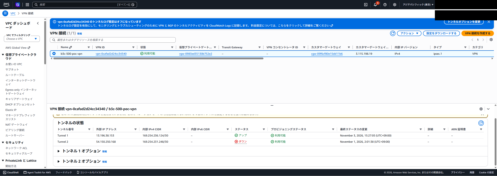
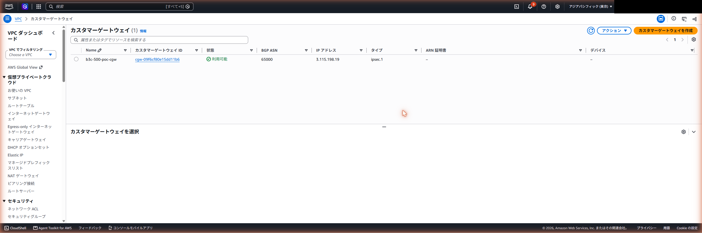
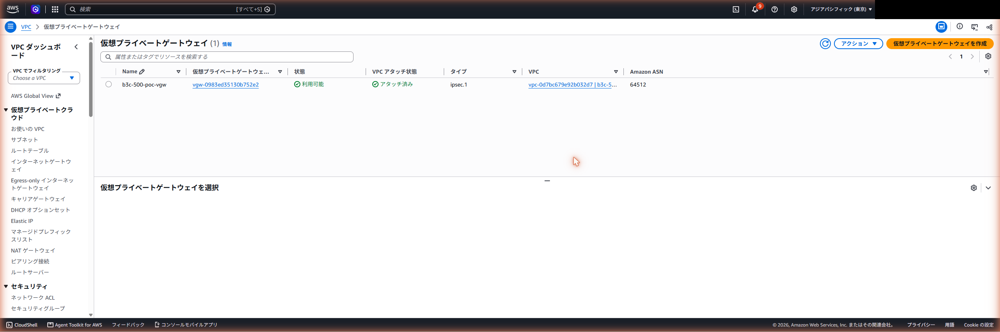
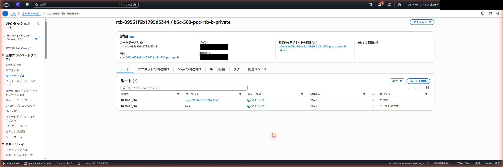

00 検証サマリー — AWS Site-to-Site VPN PoC
この文書で分かる事：検証の目的、結論、受入の条件 11 項目の達成状況。詳細は本ページの各タブを参照。
検証日：2026-11-01（ap-northeast-1）
1. 検証の目的
AWS 東京リージョンに独立した 2 つの VPC（VPC-A：10.10.0.0/16、VPC-B：10.20.0.0/16）を作る。VPC-A を疑似オンプレミス拠点として VPN ルーター（Yamaha Virtual Router vRX）を置き、VPC-B の仮想プライベートゲートウェイ（VGW）と AWS Site-to-Site VPN（IPsec/IKEv2、静的ルーティング）で結ぶ。各 VPC に確認用 EC2 を 1 台ずつ置き、VPN 経由で双方向に Ping が通ることを確認する。あわせて Web コンソールと CLI での構築手順と、Cisco・Yamaha・Fortinet 向けの設定サンプルを整理する。
2. 結論
- AWS Site-to-Site VPN は確立した。Tunnel1 が UP になり、EC2-A（10.10.1.10）と EC2-B（10.20.1.10）の間で双方向 Ping が 5/5 成功した（損失 0%）。通信が VPN ルーター（Yamaha vRX）を経由していることも、traceroute とルート表、トンネルのパケット数の増加（受信・送信とも 0→11、2026-11-03 取得）で確認した。
- Cisco と Fortinet の設定は参考データ（「証跡・添付」の設定情報）。
- Web コンソールでの操作手順の実機確認（T10）は未実施。CLI 手順は構築の実行記録があるが、再実行による確認は未実施（T09 は一部実施）。
- 構築したリソースは 2026-11-03 に全て削除した（失敗 0 件）。Marketplace の購読の解約と IAM の利用者の削除も済み、削除後の残存は 0 件（「片付け」タブ）。
3. 受入の条件の達成状況
| # | 受入の条件 | 判定 | 未達の原因・補足 | 現時点の結果 |
|---|---|---|---|---|
| 1 | 2 VPC 構築 | 達成 | - | VPC-A（10.10.0.0/16）・VPC-B（10.20.0.0/16）を作成（「構成」タブ） |
| 2 | VPN ルーター（Yamaha vRX）の稼働 | 達成 | - | vRX（t3.medium）が稼働し、IPsec を確立（「構成」タブ、「証跡・添付」の設定情報） |
| 3 | S2S VPN 確立 | 達成 | - | Tunnel1 UP（試験 T02） |
| 4 | A→B Ping 成功 | 達成 | - | 5/5、損失 0%（試験 T03） |
| 5 | B→A Ping 成功 | 達成 | - | 5/5、損失 0%（試験 T04） |
| 6 | VPN 経由を確認 | 達成 | - | traceroute の 1 段目が VPN ルーター、ルート表がトンネル向き、パケット数が 0→11 に増加（試験 T07） |
| 7 | Web コンソールでの構築手順 | 一部達成 | Web コンソールでの操作手順の実機確認は未実施（T10）。画面名の一部は公式文書で確認できていない | - |
| 8 | CLI での構築手順 | 一部達成 | 構築は CLI で実施した記録がある。CLI 手順の再実行による確認は未実施（T09）。削除は 2026-11-03 に実行した（「片付け」タブ） | - |
| 9 | 3 社サンプル整理 | 達成 | Cisco・Fortinet は参考データ | 「証跡・添付」の設定情報 |
| 10 | 結果と証跡の保存 | 達成 | - | 「試験」「証跡・添付」タブ |
| 11 | 削除対象の整理と削除 | 達成 | - | 削除対象を整理し、2026-11-03 に削除。残存 0 件を確認（「片付け」タブ） |
未達・一部達成の項目は、上表のとおり原因と現時点の結果を記載した。完了とは言えない項目（7・8）がある。
01 構成（概要）
1. 構成
AWS 東京リージョンに VPC を 2 つ作る。VPC-A を疑似オンプレミス拠点（SITE-A）とし、VPN ルーター（Yamaha vRX）を置く。VPC-B（SITE-B）の仮想プライベートゲートウェイ（VGW）と IPsec で接続する。各 VPC に確認用 EC2 を 1 台ずつ置く。
論理構成図。vRX の LAN1/LAN2 は同一 EC2 の別 ENI。Ping 線は論理的な通信関係を示す。
通信の経路（A から B）：EC2-A（10.10.1.10）→ VPC-A 非公開ルート表（10.20.0.0/16 の向け先は vRX の LAN2）→ vRX が IPsec で暗号化 → LAN1 から EIP 経由でインターネット → AWS の VPN エンドポイント → VGW → VPC-B ルート表 → EC2-B（10.20.1.10）。戻りは逆順。
構成の条件：IPsec/IKEv2、VPN 接続 1 本（AWS 提供トンネル 2 本のうち Tunnel1 のみ使用）、静的ルーティング、事前共有鍵（PSK）認証。BGP・Transit Gateway・VPC Peering・NAT Gateway は使わない。
05 PoC 試験結果（T01〜T10）
この文書で分かる事：10 項目の試験の結果（合格・一部実施・未実施）と、その証跡の場所。VPN が UP になっただけでなく、Ping が通り、通信が VPN を経由していることを確認している。
検証日：2026-11-01。出力の全文は「証跡・添付」の各ファイルにある（各ファイルの冒頭に取得日時・コマンド・実施した場所を記載）。PSK・口座番号・管理者 IP の値だけを伏せ字にしてある。
1. 結論
- 実接続の試験 T01〜T07 は合格。T05・T06 は VPN ルーター（Yamaha vRX）の IKE SA・IPsec SA で確認した。
- Ping は両方向とも 5/5、損失 0%。
- T08 は合格（Cisco・Fortinet は参考データ）。T09 は一部実施。T10 は未実施。
2. 試験結果の一覧
| 試験 | 試験項目 | 合格条件 | 結果 | 判定 | 実施時刻（2026-11-01） | 出力の要点 | 証跡 |
|---|---|---|---|---|---|---|---|
| T01 | VPN 接続作成 | 作成される | VPN 接続が available。Tunnel1 のオプション：IKEv2・AES256・SHA2-256・DH14 | 合格 | 作成 01:57:26（CloudTrail の CreateVpnConnection）。状態の確認 02:21:03 | describe-vpn-connections で状態 available |
T01_vpn_connection.txt |
| T02 | IPsec 確立 | Tunnel1 が UP | Tunnel1 UP。Tunnel2 は DOWN（使わない設計） | 合格 | 02:14:38 | "Status": "UP"（Tunnel1） |
T02_tunnel_status.txt、2026-11-03 の画面 SS17（Tunnel1 アップ、Tunnel2 ダウン） |
| T03 | EC2-A → EC2-B の Ping | 成功（EC2-A から 10.20.1.10 へ） | 5/5 受信、損失 0% | 合格 | 02:14:28 | 5 packets transmitted, 5 received, 0% packet loss |
T03_ping_A_to_B.txt |
| T04 | EC2-B → EC2-A の Ping | 成功（EC2-B から 10.10.1.10 へ） | 5/5 受信、損失 0% | 合格 | 02:14:33 | 5 packets transmitted, 5 received, 0% packet loss |
T04_ping_B_to_A.txt |
| T05 | vRX の IKE SA 確立 | IKE SA が確立 | IKE SA 1 本が確立 | 合格 | 02:14:40 | Total: isakmp:1 send:1 recv:1、トンネルインタフェースは接続されています |
T05_T06_vrx_ipsec.txt |
| T06 | vRX の IPsec SA 確立 | IPsec SA が確立 | ESP の送信・受信 SA が各 1 本確立 | 合格 | 02:14:40 | 同上（send:1 recv:1） |
T05_T06_vrx_ipsec.txt |
| T07 | VPN 経由を確認 | 通信が VPN を経由している | traceroute の 1 段目が VPN ルーターの内側 IP、ルート表で 10.20.0.0/16 がトンネル向き、Ping の前後でトンネルのパケット数が増加（受信・送信とも 0→11、2026-11-03 の取り直し） | 合格 | 02:14:38・02:14:40（traceroute・ルート表）。パケット数は 2026-11-03 17:41:18・17:41:50 | 1 10.10.1.5 0.341 ms（VPN ルーター）、2 段目 10.20.1.10。パケット数は 受信: (IPv4) 11 パケット、送信: (IPv4) 11 パケット |
T07_route.txt、パケット数 T07_section3_retake_20261103.txt |
| T08 | 3 メーカーの対応状況を確認 | 対応状況を確認 | Yamaha RTX・Cisco CSRv・Fortinet FortiOS 6.4.4+ (GUI) のサンプルを取得。FortiOS 5.0+ は IKEv2 非対応で取得不可。Yamaha vRX は AWS の機種一覧に無い。Cisco・Fortinet は参考データ | 合格 | 時刻の記録なし | get-vpn-connection-device-types の一覧、サンプル 3 本 |
T08_device_types.json、T08_samples |
| T09 | CLI 手順の実行・確認結果を記録 | 実行結果を記録 | CLI でリソースを作成し、describe で確認した記録がある。CLI 手順の再実行による確認は未実施 | 一部実施 | 構築中（時刻は実行記録に記載） | VPC・サブネット・IGW・ルート表・SG・EC2・VPN 等の作成と確認 | なし（本書には含めない） |
| T10 | Web 手順の操作手順と設定値を確認 | 手順と設定値を確認 | Web コンソールでの操作手順の実機確認は未実施 | 未実施 | - | - | なし |
3. 実施した試験と、未実施の項目
| 区分 | 項目 |
|---|---|
| 実機・実環境で実施した | T01、T02、T03、T04、T05、T06、T07 |
| 参考データ | T08 のサンプル。Cisco・Fortinet の設定（「証跡・添付」の設定情報） |
| 一部のみ実施 | T09（CLI で構築した記録はある。CLI 手順の再実行による確認は未実施） |
| 未実施 | T10（Web GUI の操作確認）、Yamaha vRX の GUI 手順 |
4. 取得日の違い
T01〜T09 の出力は 2026-11-01 の試験時の記録。次の点は 2026-11-03 に取得した。
- T07 のトンネルのパケット数：T07_section3_retake_20261103.txt（2026-11-01 の記録はパケット数が取れていなかったため、同じ構成を起動して取り直した）。
- 画面の証跡（SS17・SS09・SS10・SS04c の 4 枚）：2026-11-03 に取得。「証跡・添付」に載せた。
片付け
検証環境は 2026-11-03 に削除済み。AWS のリソースは 2026-11-03 18:44〜18:48（日本時間）に全て削除し（失敗 0 件）、削除後の残存確認はすべて 0 件だった。
Marketplace の購読は解約済みで、検証用の IAM の利用者・ポリシー・アクセスキーも削除済み。
証跡・添付
試験の出力（取得ログ）
各ファイルの冒頭に、取得日時・コマンド・実施した場所を記載している。PSK・管理者の IP・口座番号の値だけを伏せ字にしてある。
付録：設定情報（手動で設定が要る時に使う）
検証で使った設定を、ファイルとして添付している。PSK の値は伏せてある。取得時点（2026-11-01）の記録で、検証環境は 2026-11-03 に削除済み。
AWS 側の VPN 接続の設定（暗号方式・トンネル・静的ルートなど） vrx_show_config_redacted.txt ↗
Yamaha vRX に入れた設定（実機の show config） b3c-500-poc-policy-v3.json ↗
検証用 IAM 利用者 b3c-500-poc-cli に付けたカスタマーポリシー（b3c-500-poc-policy）。ほかに AWS 管理ポリシー 2 つ（AmazonEC2FullAccess・EC2InstanceConnect）を付けた yamaha_e7a2d626_redacted.txt ↗
Yamaha RTX の設定例（AWS が配るサンプル） cisco_csrv_7b754310_redacted.txt ↗
Cisco CSRv の設定例（参考・実機未検証） fortinet_7125681a_redacted.txt ↗
Fortinet の設定例（参考・実機未検証）
Cisco・Fortinet の設定例は参考データで、実機では試していない。Yamaha RTX の設定例も AWS が配るサンプルで、検証に使った vRX の設定は上の vrx_show_config_redacted.txt。
画面の証跡（AWS コンソール）
結論の裏づけになる画面 4 枚。口座番号・メールアドレス・管理者の IP・本検証以外のリソースの表示は黒塗りしてある。画像を押すと原寸で開く。

試験 T02 の裏づけ。2026-11-03 に撮った画面。

お客様側の機器として VPN ルーター（vRX）を登録した設定。

AWS 側の VPN の口。

10.10.0.0/16 の向け先が VGW（VPN 経由の経路）。